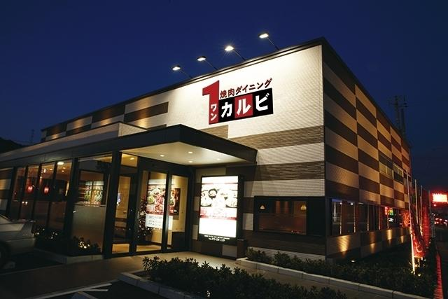
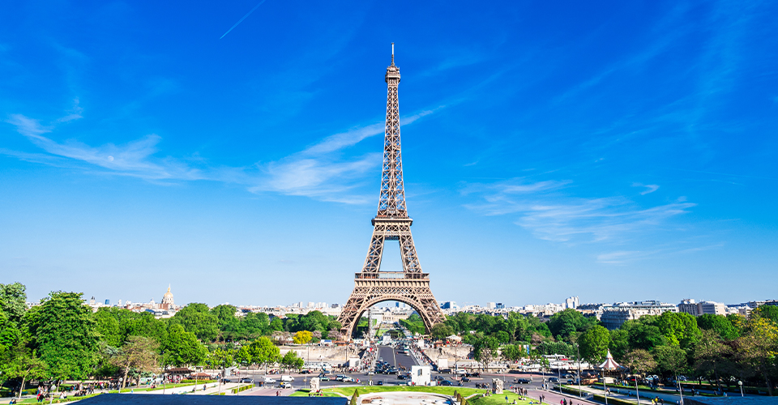
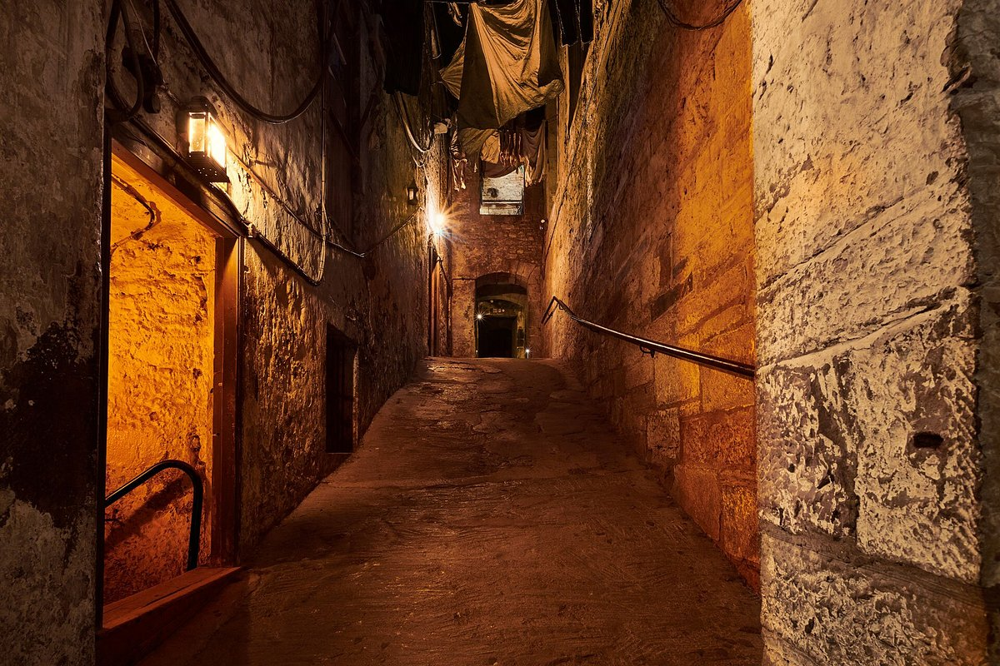
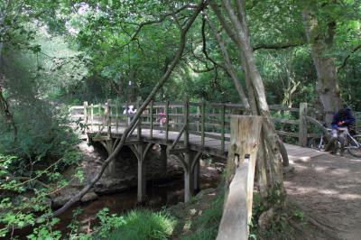
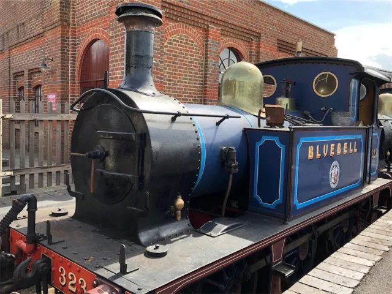

今年の夏休みでは初めての一時帰国をしました。
久しぶりの日本は懐かしかったけど、やっぱり暑かったー！

イギリスに遊びに来たいとこたちと一緒にパリに行きました。
僕たちとしては二回目のパリでしたが、それでも楽しかった！
何回行っても飽きないなと思った

いとこたちが日本に帰った後、家族でエディンバラに行きました。
個人的にはメアリーキングズクロースという地下街が楽しかった！

プーカントリーに行きました。
いろいろ悩んだ末、結局お土産は買わないことにした。
でも、後でプーさんを買っておけばよかったと後悔してしまった！

プーカントリーの次に行った場所。
ブルーベル鉄道はかっこいい汽車もたくさんいて、（←トーマスの名残り）
しかも昔好きだったジェームス（トーマスのキャラクター）にも会えた！